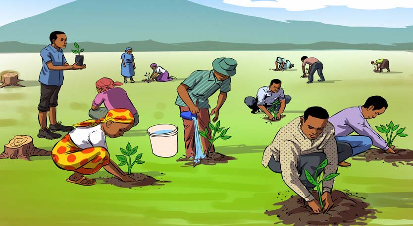

Nakili habari ya Kijiji cha Mbesa kwa kuzingatia alama za uandishi; tumia eneo la kuandikia, kibodi au Breli.
Kuandika habari fupi kwa kuzingatia alama za uandishi Zoezi la nne Nakili habari ifuatayo huku ukizingatia alama za uandishi zilizotumika. Kijiji cha Mbesa Kijiji cha Mbesa kilikuwa maarufu. Kilikuwa na msitu wenye miti mikubwa. Wanakijiji walikuwa wanafanya biashara ya mkaa. Walikata miti ovyo ili kuchoma mkaa. Miaka michache baadaye, miti mingi ilikuwa imekatwa. Lo! Kijiji kikageuka jangwa. Mimea na mito yote ilikauka. Wanakijiji walihangaika sana. Wakajiuliza, tutaishije bila maji na chakula? Mwenyekiti wa kijiji aliamua kuchukua hatua. Aliwaalika wataalamu wa mazingira. Wataalamu walipofika kijijini, wakawashauri wanakijiji kupanda miti na kuitunza. Wanakijiji walipanda miti na kuitunza. Baada ya miaka kadhaa, miti ilikua, na msitu ukarejea. Kijiji cha Mbesa kikawa maarufu tena.
